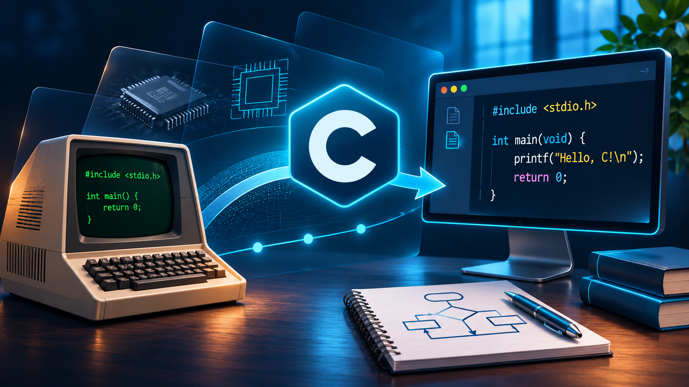

Základy jazyka C
Štruktúra programu, premenné, vstup a výstup, vetvenie, cykly a funkcie.

Úvod do programovania v jazyku C
3 témy · 45 minút na prednášku
Začnite historickým úvodom a normou C17, potom vytvorte prvý program v C a naučte sa rozpoznať chyby pri jeho preklade a ladení.
4.1 Historický úvod a normy jazyka C
Od prvých počítačov k dnešnému C: vznik jazyka, vývoj noriem a význam režimu C17.
Otvoriť tému →4.2 Prvý program v jazyku C
Napíšte program „Ahoj, svet!“, spoznajte funkciu main, výpis pomocou printf a cestu od zdrojového kódu k výstupu.
4.3 Ladenie a spustenie programu
Prečítajte diagnostiku GCC, opravte chybu, spustite program a porovnajte skutočný výstup s očakávaným.
Otvoriť tému →Tematická cesta jazykom C
Hodiny 19–60 · 45 minút na hodinu
Existujúce prednášky sa otvoria priamo. Pri témach bez vlastnej prednášky vedie odkaz na materiály príslušného modulu; ďalšie interaktívne prednášky sa pripravujú.
Dokončené hodiny C:
Tematický celok 4 · hodiny 19–22Úvod do programovania v štruktúrovanom jazyku
4 vyučovacie hodiny
Úvod do programovania v štruktúrovanom jazyku
- 19
Historický úvod a normy jazyka C
Vznik jazyka C, Dennis Ritchie, Unix a normy C89, C99 a C11.
- 20
Prvý program v jazyku C
Funkcia
main,stdio.h, direktíva#includea preklad programu. - 21
Ladenie a spustenie programu
Preklad cez GCC, varovania a rozlišovanie chýb pri preklade a spustení.
- 22
Tematický celok 5 · hodiny 23–26Konštanty, premenné a deklarácie
4 vyučovacie hodiny
Konštanty, premenné a deklarácie
- 23
Identifikátory a kľúčové slová
Pravidlá pomenovávania premenných a rezervované slová jazyka C.
Materiály modulu - 24
- 25
- 26
Tematický celok 6 · hodiny 27–30Operátory a výrazy
4 vyučovacie hodiny
Operátory a výrazy
- 27
- 28
Priradenie a aritmetické operátory
Operátory
Materiály modulu+ - * / %, inkrementácia a dekrementácia. - 29
- 30
Tematický celok 7 · hodiny 31–38Funkcie a procedurálne programovanie
8 vyučovacích hodín · dve dvojhodinovky
Funkcie a procedurálne programovanie
- 31–32
Deklarácie, definície a návratová hodnota
Prototyp funkcie, argumenty, návratové hodnoty a použitie
Materiály moduluvoid. - 33–34
- 35–36
Vlastné funkcie a odovzdávanie parametrov
Odovzdávanie hodnotou a sprostredkovanie zmeny pomocou ukazovateľov.
Materiály modulu - 37–38
Tematický celok 8 · hodiny 39–48Riadenie chodu programu
10 vyučovacích hodín · tri dvojhodinovky
Riadenie chodu programu
- 39–40
- 41–42
- 43–44
- 45–46
- 47–48
Tematický celok 9 · hodiny 49–58Ukazovatele, polia a reťazce
10 vyučovacích hodín · päť dvojhodinoviek
Ukazovatele, polia a reťazce
- 49–50
- 51–52
- 53–54
- 55–56
- 57–58
Tematický celok 10 · hodiny 59–60Súborový vstup a výstup v C
2 vyučovacie hodiny
Súborový vstup a výstup v C
- 59
- 60
Študijné podklady
PDF k základom jazyka C
Kompletný materiál je dostupný v PDF v prehliadači aj na stiahnutie.
Precvičovanie
Interaktívny test
Odpovedzte na otázky o štruktúre programu, dátach, riadiacich štruktúrach a funkciách v C.